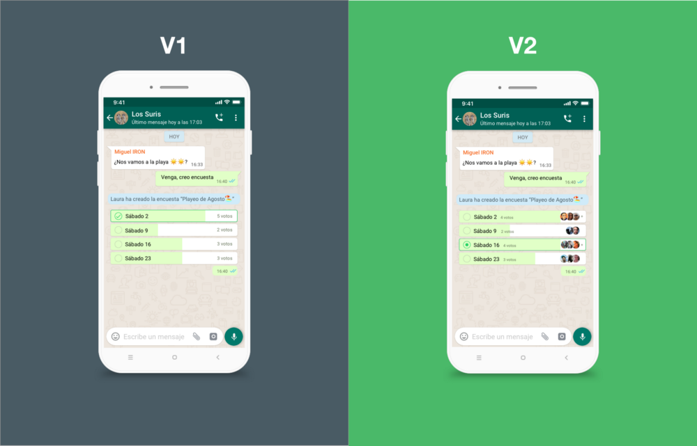

Add a feature
Whatsapp Polls

Do you use Whatsapp to make plans with your friends? Have you ever found difficult to decide on a date? Do you usually end up with your Whatsapp group full of endless lists with information that sometimes get lost? If you nodded to all or some of this questions, you need Whatsapp polls in your life.
Whatsapp polls is a 4-day project carried out during Ironhack’s UX/UI Bootcamp with my colleague Miguel Durán Pardo.
Brief
Whatsapp is a messaging app founded in 2009 by Brian Acton and Jan Koum. It was acquired by Facebook in 2014 and it continues operating as an independent app.
Its mission is to create a better connected world through simple, secure and reliable messaging. It currently has 1.5 billion users worldwide who send an average of 30 billion messages, daily.
The goal of this project is to add a new feature based on Whatsapp’s users’ needs, staying in tune with the brand.

The Problem
It’s difficult to make group decisions using Whatsapp.Whatsapp is the leading messaging app in Europe. Many users try to take group decisions using Whatsapp. For example, deciding the date for a plan, the next holiday spot or a birthday present. We found multiple issues when taking group decisions:
- It is hard to organise participants. It gets even harder with large groups.
- Some users can’t keep up with all the messages, missing plans or relevant information.
- It’s easier to override previous information when people use lists to keep track of votes.
The solution
We propose to add a poll feature to decrease the user time and effort when taking group decisions.

Prototype
Our first prototype was based on a research in Whatsapp branding. We performed a Usability Test on 5 users and iterated to a second version. The main takeaways from the test were:
- 5/5 users successfully created a poll and voted.
- 3/5 users changed their vote tapping on a different option.
- 3/5 users tried to find the poll feature under the more menu –three dots on the top right corner.
- Users wanted to be able to see existing votes, even before casting their own vote.
- Users wanted to be able to find their previous polls. We designed a screen where users could see, edit and close existing and previous polls in order to solve this concern.
- Users didn’t know how to create a multi selection poll. We added a switch button on the poll configuration screen to choose between single and multi selection. When turned on radio buttons become checkboxes.
- Our radio button design was inconsistent with the standard. We used a check mark, which indicates a selected option in a checkbox –multiple selections.
This information was extremely valuable to polish the design and iterate to a second version.
Design Process
UX Blueprint
The first step was developing the UX Blueprint, which helped us define the strategy. We analysed how the design of this new feature would benefit the business by adding value to customers, as well as the tools that we will use throughout the process to reach our goal.

Competitive Analysis
We researched other messaging and surveys apps in the market and analysed the features they offer. Also we started thinking about what other things we needed to add to our product to stand out from our direct competitors.
From this research, we discovered that – Facebook Messenger, Telegram y Line – already have the poll feature in their applications. Whatsapp is then at a disadvantage with its competitors as it offers less functionalities to its users. We see adding this feature as an opportunity to attract new users and increase user satisfaction.
To stand out from our competitors, our feature had to be easy to use, clear and users should be able to change their response, since other apps were a bit more complex and without the possibility of changing the vote.
User Flow
We made a user flow user flow to identify the main pain points when taking decisions in groups.
In the current user flow we discover the following areas of friction:
- Having to create lists with multiple options in a limited space.
- Having to copy-paste the list increasing the risk of losing information.
- Not being able to know whether everyone has replied or who hasn’t participated yet.

In the following user flow we can see what would be the steps with the poll feature implemented. Noticed how the user has to perform less steps and the task becomes easier and more comfortable.

Brand Analysis
In order to design this new feature to make it blend with the current app, we carried out a research on Whatsapp’s mission, philosophy and design principles.
simple, personal, connection. –WhatsappWhatsapp's goal is to create a simple, secure and reliable messaging application that allows users to stay in touch with their friends and family. Each product decision is based on the desire to allow people to communicate anywhere in the world without barriers.
The design is simple and easy to use, so Whatsapp doesn’t need to explain any of its features to its users.
The tone is plain and simple. They use a direct language to describe the actions the user can perform. It does not include anything that can cause distraction or confusion and they only use enough text to explain messages.
Their primary color is green –Whatsapp green– which they use to evoke a friendly and calm feeling. They also use a different set of colors to complement it but with caution.

The typeface used in their chat is Helvetica Neue, which complements the brand personality. Helvetica Neue is a clear and accesible typeface.

Buttons are circular and they drop a shadow effect adding emphasis.

Summing up, our feature should follow these three principles:
- UI should feel native to user device –Android in our case.
- The feature has to be simple.
- The feature has to be intuitive without the need of instructions.
Navigating the feature
- The user gets into a group chat, taps on the top right icon to see more options and they find “Group’s polls” [1].
- In that new screen they can see other polls and create new ones by tapping on the add icon. A new poll can also be added by tapping on the group name –top bar– to see the group’s details. There, they can select “create new poll” [2].

- To create a new poll, the user has to fill the title and options. Options can be rearrange by dragging them. They can also choose between multiple/single choice [3] and anonymous/public votes [4].

- Once the poll is published, the user can vote and edit their choice by tapping on a different option.
- The user can see a list of polls inside “Group’s polls” [5], active ones with a white background and inactive ones with a grey background.

Below you can see the last version of the prototype with the full user flow, from creating a poll, choosing an option and checking the list and status of the poll.
Next steps
Even though we are quite happy with the current prototype, no design is perfect and we would like to keep improving it with new ideas and feedback. We want to carry out another usability test on 5 people to keep iterating the design and improve the usability.
Other features we would like to try are:
- See who is still pending to vote.
- Be able to set an expiry date and show reminders to those who haven’t voted yet.
- Improve the visual design to highlight the most voted option.
- Find a better way to show the amount of votes in each option.
Learnings
This case study has been very helpful for me to learn the importance of researching a brand’s values and design principles before actually starting to create a prototype. This enables us to create a feature that is consistent with the existing design.
I have also learned that the usability test is of key importance to iterate the design, improving the user experience based on their needs.